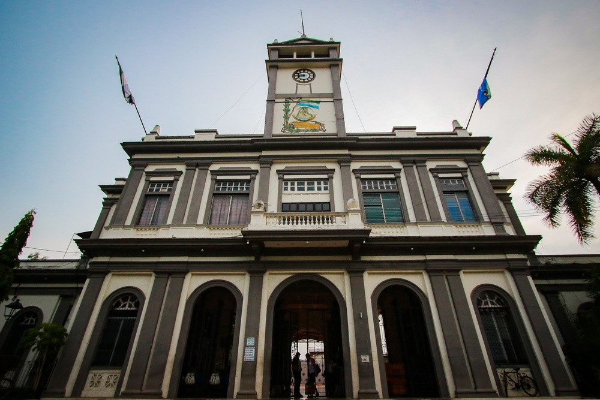

MAPA DE USULUTÁN

Información
El departamento de Usulután se encuentra en la zona oriental de El Salvador y es el más grande del país en términos de extensión territorial. Su cabecera departamental es la ciudad de Usulután. La economía del departamento se basa en la agricultura, destacando la producción de café, caña de azúcar y granos básicos. Además, cuenta con una importante actividad pesquera y turística gracias a su acceso a la costa del océano Pacífico.

Datos Históricos
Usulután fue fundado como departamento el 22 de junio de 1865. Durante la época colonial, la región fue habitada por pueblos lencas y luego colonizada por los españoles. En el siglo XX, Usulután se convirtió en un centro clave para la producción agrícola y ganadera del país. Durante el conflicto armado salvadoreño (1980-1992), el departamento fue escenario de importantes enfrentamientos entre el ejército y la guerrilla.
Lista de Municipios
- Usulután (cabecera departamental)
- Jiquilisco
- Berlín
- Santiago de María
- Santa Elena
- Concepción Batres
- Santa María
- Puerto El Triunfo
- Jucuapa
- San Buenaventura
- San Dionisio
- Estanzuelas
- San Agustín
- San Francisco Javier
- Mercedes Umaña
- Ereguayquín
- Ozatlán
- California
- Alegría
- Tecapán
Centros Turísticos
Usulután cuenta con una gran variedad de destinos turísticos, destacando la Bahía de Jiquilisco, un ecosistema de manglares y canales ideal para el ecoturismo y la pesca. También se encuentra el municipio de Alegría, famoso por su clima fresco y la Laguna de Alegría, conocida como "el espejo de esmeralda" por sus aguas de tonalidad verdosa. Otro destino importante es Puerto El Triunfo, una localidad costera que ofrece paseos en lancha y acceso a la pesca artesanal.

Lagos
El departamento de Usulután no cuenta con grandes lagos, pero destaca la Laguna de Alegría, ubicada en el cráter de un antiguo volcán. Sus aguas poseen un alto contenido de azufre y minerales, lo que le da su característico color verde esmeralda. Es un destino popular para el turismo de montaña y senderismo.

Ríos
Entre los principales ríos de Usulután se encuentra el río Lempa, que atraviesa el departamento y es una importante fuente de agua para la agricultura y la generación de energía. También destacan el río Grande de San Miguel, el río Jiquilisco y el río El Espino, los cuales desembocan en la Bahía de Jiquilisco, un ecosistema clave para la biodiversidad y la pesca.

Volcanes
El departamento de Usulután cuenta con el Volcán Tecapa, ubicado en la zona de Alegría. Este volcán es conocido por la formación de la Laguna de Alegría en su cráter. Aunque no está activo, sus aguas sulfurosas y los vapores que emana del suelo muestran evidencia de actividad geotérmica. El volcán es un destino popular para los amantes del senderismo y la naturaleza.
Personajes Célebres
Algunas figuras históricas y personalidades importantes nacidas en Usulután incluyen:David Granadino Compositor usuluteco, autor de la famosa pieza musical "Bajo el almendro".